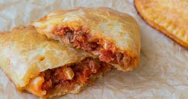

GASTRONOMY

🍽️ Spanish Gastronomy
Spanish gastronomy is one of the richest and most varied in the world. It is characterized by the use of fresh ingredients, traditional recipes, and great regional diversity, influenced by climate, history, and the cultures that have passed through Spain (Romans, Arabs, Jews, Mediterranean peoples).
🫒 Basic ingredients
-
Olive oil (essential in almost all dishes)
-
Garlic and onion
-
Tomato
-
Peppers
-
Legumes (lentils, chickpeas, beans)
-
Rice
-
Fish and seafood
-
Meats (pork, lamb, beef)
-
Spices such as paprika and saffron
🗺️ Gastronomy by regions
🔹 Andalusia
-
Gazpacho and salmorejo
-
Fried fish (pescaíto frito)
-
Arab influence
🔹 Valencian Community
-
Paella (rice with seafood, meat, or vegetables)
-
Various rice dishes

🔹 Basque Country
-
Pintxos
-
Cod in pil-pil sauce
-
Internationally recognized haute cuisine
🔹 Galicia
-
Galician-style octopus
-
Seafood
-
Empanadas
🔹 Castile-La Mancha
-
Cocido (stew)
-
Manchego cheese
🔹 Catalonia
-
Bread with tomato
-
Escudella (traditional stew)
-
Use of nuts and sauces
⭐ Cultural importance
Gastronomy in Spain is not just about food: it is tradition, family, and celebration. Eating is usually a social act and a moment to share.
🍷 Tapas
Tapas are small portions of food served as an accompaniment to a drink. They are very popular and are an important part of Spanish social life.
Examples:
-
Spanish omelette
-
Croquettes
-
Patatas bravas
-
Iberian ham
🍰 Traditional desserts
-
Churros with chocolate
-
Flan
-
Turrón
-
Crema catalana
-
Polvorones
🍇 Traditional drinks
-
Wine (Spain is one of the largest producers in the world)
-
Sangria
-
Cava
-
Cider (especially in Asturias)
Copy Rigth 2026©
Mateo Sanchez
Christian Antolin
Alonso Gutierrez
Santiago Diaz
Valentina Abascal
Dario Andrade